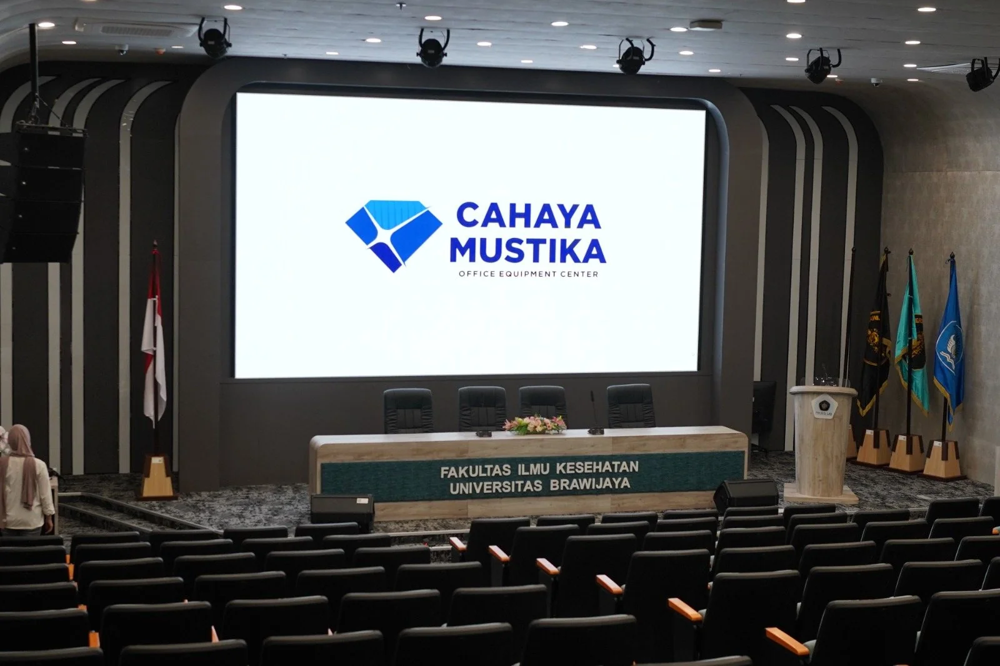
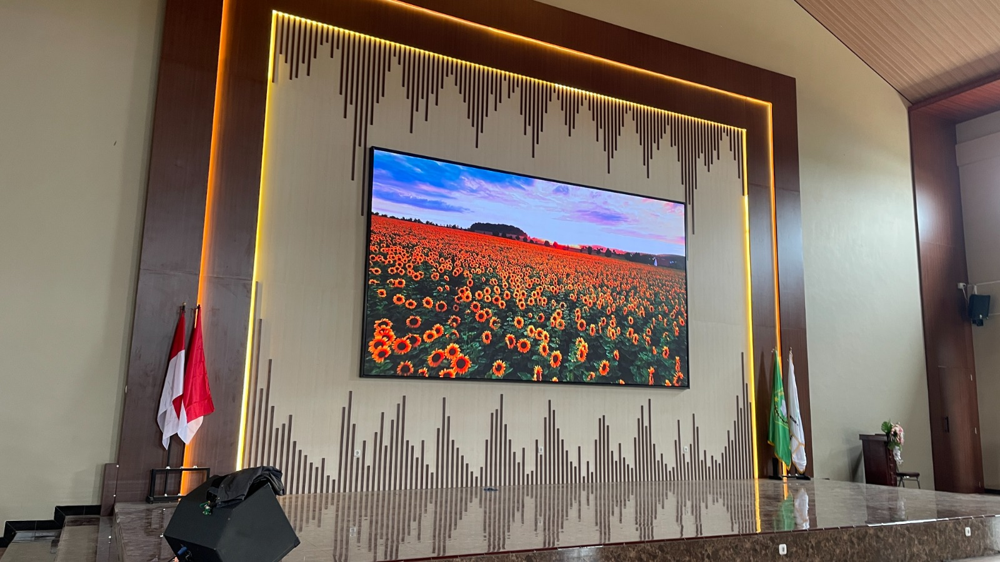

Pendidikan & Kampus
Auditorium dan aula kampus membutuhkan layar lebar yang terbaca jelas dari kursi depan sampai belakang untuk perkuliahan, wisuda, dan seminar.
Videotron Outdoor & Indoor
Videotron Indoor untuk lobby, ruang meeting, retail, showroom, dan event, serta Videotron Outdoor untuk fasad gedung dan billboard, dengan tampilan yang tajam, cerah, dan profesional.
01/Auditorium
Kendala yang Sering Dihadapi
Memilih dan memasang videotron indoor maupun outdoor tidak sesederhana membeli layar. Lokasi, jarak pandang, cuaca, dan tujuan tampilan yang berbeda membuat setiap kebutuhan punya tantangannya sendiri.
Materi yang tampil di layar kecil atau proyektor redup membuat audiens sulit fokus dan kurang terlibat dalam acara.
Informasi penting sulit terbaca dari barisan belakang atau sudut ruangan, sehingga pesan tidak sampai ke semua orang.
Warna pucat, gambar berpiksel, dan kecerahan yang tidak sesuai ruangan membuat konten terlihat kurang profesional.
Lobby, aula, dan ballroom butuh bidang layar luas dengan ukuran dan rasio yang pas, tanpa bezel yang mengganggu.
Setiap sektor punya jarak pandang, pencahayaan, dan tujuan yang berbeda. Kami menyesuaikan ukuran dan konfigurasi layarnya.

Auditorium dan aula kampus membutuhkan layar lebar yang terbaca jelas dari kursi depan sampai belakang untuk perkuliahan, wisuda, dan seminar.

Ruang sidang tampil lebih profesional dengan layar menyatu dinding untuk presentasi, video conference, dan identitas instansi.

Lobby dan area penerimaan yang ramai menampilkan informasi layanan, antrean, dan pengumuman dengan visual yang mudah dilihat banyak orang.

Dinding aula yang luas menampilkan acara, pengumuman, dan materi presentasi dengan ukuran layar yang menyesuaikan ruangan.

Layar menyatu di dinding ruang pertemuan untuk rapat dan presentasi, dengan warna natural dan detail yang tetap jelas.

Latar panggung untuk seminar, resepsi, dan acara yang menyatu dengan dekorasi ruangan, dengan ukuran layar yang fleksibel menyesuaikan lebar panggung.
Pilih jenis dan pixel pitch sesuai jarak pandang dan anggaran Anda. Semakin kecil angkanya, semakin tajam gambarnya.
Pixel sangat rapat untuk dilihat dari jarak dekat: ruang rapat, lobby, ruang kontrol, dan studio. Detail teks dan gambar tetap tajam.
Pilihan seimbang antara kualitas gambar dan anggaran untuk ruang luas dengan jarak pandang menengah: aula, ballroom, retail, dan panggung.
Untuk fasad gedung, area komersial, dan titik keramaian dengan jarak pandang menengah. Gambar tetap detail dan tahan hujan serta debu.
Untuk billboard dan reklame berukuran besar yang dilihat dari jauh, seperti perempatan dan tepi jalan raya. Pixel lebih renggang sehingga lebih hemat.
Videotron Indoor adalah layar LED modular untuk pemasangan di dalam ruangan. Layar tersusun dari cabinet yang bisa digabung menjadi ukuran apa pun, dengan gambar tajam dan terang tanpa bingkai (bezel) yang mengganggu.
Angka setelah P adalah pixel pitch, yaitu jarak antar titik LED dalam milimeter. P1.25 lebih rapat sehingga gambar lebih detail dan bisa dilihat dari jarak lebih dekat, tetapi harganya lebih tinggi. P2.5 cocok untuk ruang lebih luas dengan jarak pandang lebih jauh.
Videotron Indoor dipasang di dalam ruangan dengan pixel pitch lebih rapat (P1.25–P3) untuk jarak pandang dekat. Videotron Outdoor dibuat tahan hujan, debu, dan panas (IP65) dengan kecerahan jauh lebih tinggi (sekitar 6.000 nits ke atas) agar tetap terbaca di bawah sinar matahari, dan umumnya memakai pixel pitch P4–P10.
Sebagai patokan, jarak pandang minimum dalam meter kurang lebih sama dengan angka pixel pitch dalam milimeter. Contoh: P2.5 nyaman dilihat dari sekitar 2,5 meter atau lebih.
Bisa. Layar dirakit dari cabinet modular, sehingga ukuran dan rasio layar dapat disesuaikan dengan dinding atau ruangan Anda.
Tim kami membantu survei lokasi, perencanaan rangka, instalasi, dan pengujian. Hubungi sales untuk detail cakupan di area Anda.
Masa garansi bergantung pada tipe produk dan perjanjian pembelian. Sales kami akan mencantumkannya secara jelas di penawaran.
Ya. Kami menyediakan dukungan purna jual dan perawatan berkala. Paket dan biayanya dapat didiskusikan bersama sales.
Mari wujudkan layar yang menarik perhatian.
Hubungi Tim Kami